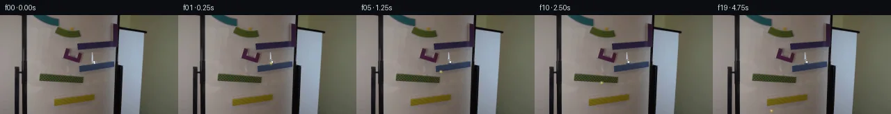
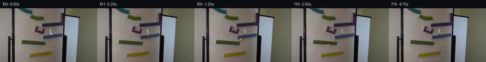
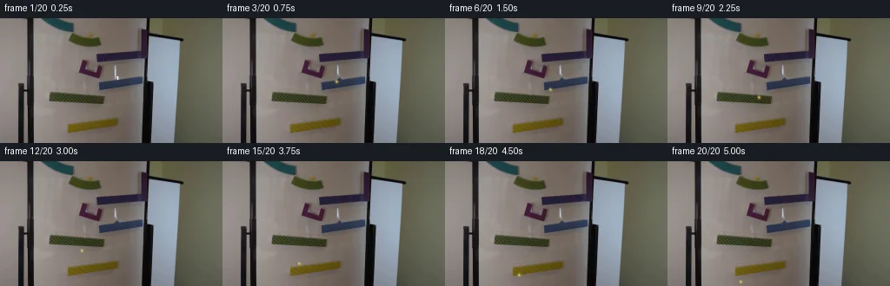
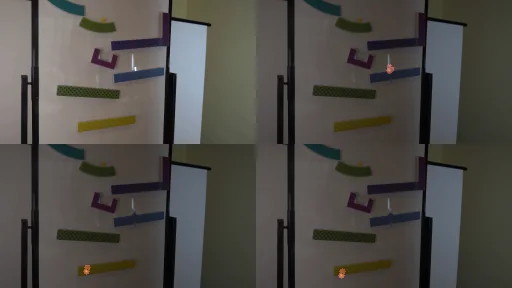

V0 · 初版
2026-11-05T22:19:29.415925+00:00 · RGB 10034067bee3
![]()
Observable Generation Trace
把最终像素视频、Harness 冻结的每轮候选、真实工具事件和 Agent 自述放在同一页。可观测证据与模型自述分开标记，避免把“模型说它检查过”误当成真实工具调用。
![首帧]()
Static locked-off single-shot with fixed frame throughout filmed with constant framerate in real-time. The scene shows a realistic scientific demonstration. The scene only contains the described setup and actions. The magnetic ramps are attached to a whiteboard for a game of marble run. The yellow glass marble is released at the top of the ramps and then slides down the magnetic ramps.
首帧显示在左侧播放器初始画面。Track 权限、隔离和 tensor 一致性来自 run manifest，而不是 METHOD.md。
默认勾选初版和最终版；可选其他版本一起同步播放。仅检查图更新的连续重复快照已合并，回退旧视频仍保留为一次修订。
Observable events
来源：events.jsonl + run manifest
此 Track 禁止读取输出图片。逐轮预览由外部 Harness 自动冻结，只用于事后审计，生成 Agent 当时看不到这些页面。
Frozen candidates
每张图来自该 round 的真实 00 / 01 / 05 / 10 / 19 帧

pixels 64c8a1ef23afb2ff · code fe0997f566d1cc3c
--- previous/generate.py
+++ current/generate.py
@@ -0,0 +1,304 @@
+"""generate.py — Case 0103 Marble Run Animation
+
+Generates 20 RGB frames (256×144) showing a yellow glass marble sliding down
+magnetic ramps on a whiteboard. Frame 00 == first_frame.png exactly.
+
+Method: Pure Python pixel manipulation. The marble is rendered as a small
+yellow glass sphere with a specular highlight, moved along a physics-based
+trajectory. Background restoration uses surrounding-pixel inpainting.
+"""
+
+import numpy as np
+from PIL import Image
+from pathlib import Path
+import sys
+
+CASE_DIR = Path(__file__).parent
+H, W = 144, 256
+
+# ---------------------------------------------------------------------------
+# 1. Load base image & prepare clean background
+# ---------------------------------------------------------------------------
+def load_first_frame():
+ img = Image.open(CASE_DIR / "first_frame.png")
+ arr = np.array(img).astype(np.uint8)
+ assert arr.shape == (H, W, 3), f"Expected {(H,W,3)}, got {arr.shape}"
+ return arr
+
+def create_clean_background(arr):
+ """Inpaint the marble region from frame 00 to create a marble-free background."""
+ clean = arr.copy().astype(np.float64)
+
+ # Marble region in frame 00: approx rows 64-71, cols 131-137
+ # Restore with local neighborhood average
+ r0, r1, c0, c1 = 64, 72, 131, 138
+
+ # Sample surrounding pixels (top, bottom, left, right of marble region)
+ # Top neighbors
+ for y in range(r0, r1):
+ for x in range(c0, c1):
+ # Gather neighbors outside the marble region
+ neighbors = []
+ for dy in [-2, -1, 1, 2]:
+ for dx in [-2, -1, 1, 2]:
+ ny, nx = y + dy, x + dx
+ if 0 <= ny < H and 0 <= nx < W:
+ if not (r0 <= ny < r1 and c0 <= nx < c1):
+ neighbors.append(arr[ny, nx].astype(np.float64))
+ if neighbors:
+ clean[y, x] = np.mean(neighbors, axis=0)
+
+ return np.clip(clean, 0, 255).astype(np.uint8)
+
+
+# ---------------------------------------------------------------------------
+# 2. Marble rendering
+# ---------------------------------------------------------------------------
+def render_marble(radius=3.5):
+ """Create a yellow glass marble sprite with specular highlight.
+
+ Returns a tuple of (pixels, alpha, offset_y, offset_x) where
+ pixels is a (2R+1, 2R+1, 3) array and alpha is (2R+1, 2R+1) float in [0,1].
+ """
+ size = int(np.ceil(radius * 2)) + 2 # padding
+ cy = cx = size / 2.0
+
+ ys, xs = np.ogrid[:size, :size]
+ dist = np.sqrt((ys - cy)**2 + (xs - cx)**2)
+
+ # Glass marble body
+ body_alpha = np.clip(1.0 - dist / radius, 0, 1)
+ # Make edges softer
+ body_alpha = body_alpha ** 1.5
+
+ # Yellow glass color
+ yellow_rgb = np.array([220, 190, 60], dtype=np.float64) # Bright yellow glass
+ dark_rgb = np.array([160, 130, 30], dtype=np.float64) # Darker edge
+
+ # Radial gradient for glass sphere look (darker at edges)
+ t = np.clip(dist / radius, 0, 1)
+ marble_color = yellow_rgb[np.newaxis, np.newaxis, :] * (1 - t[:, :, np.newaxis]) + dark_rgb[np.newaxis, np.newaxis, :] * t[:, :, np.newaxis]
+
+ # Specular highlight (white reflection spot)
+ hl_dist = np.sqrt((ys - (cy - 1.2))**2 + (xs - (cx - 0.8))**2)
+ highlight = np.exp(-hl_dist**2 / (2 * 1.0**2)) # Gaussian highlight
+ highlight = np.clip(highlight, 0, 0.95)
+
+ # Combine
… diff truncated; 217 more lines …
pixels 0569c0482898da45 · code 22082bd288d082aa
--- previous/generate.py
+++ current/generate.py
@@ -26,28 +26,45 @@
return arr
def create_clean_background(arr):
- """Inpaint the marble region from frame 00 to create a marble-free background."""
+ """Inpaint the marble region from frame 00 to create a marble-free background.
+
+ Uses a marching-distance approach: for each pixel inside the marble region,
+ samples increasing rings of neighbors outside the region until enough
+ valid background pixels are found.
+ """
clean = arr.copy().astype(np.float64)
-
+
# Marble region in frame 00: approx rows 64-71, cols 131-137
- # Restore with local neighborhood average
r0, r1, c0, c1 = 64, 72, 131, 138
-
- # Sample surrounding pixels (top, bottom, left, right of marble region)
- # Top neighbors
+
for y in range(r0, r1):
for x in range(c0, c1):
- # Gather neighbors outside the marble region
neighbors = []
- for dy in [-2, -1, 1, 2]:
- for dx in [-2, -1, 1, 2]:
- ny, nx = y + dy, x + dx
- if 0 <= ny < H and 0 <= nx < W:
- if not (r0 <= ny < r1 and c0 <= nx < c1):
- neighbors.append(arr[ny, nx].astype(np.float64))
+ # Search outward in expanding rings until we find enough neighbors
+ for radius in range(1, 30):
+ ring_neighbors = []
+ # Top and bottom edges of the ring
+ for dx in range(-radius, radius + 1):
+ for ny in [y - radius, y + radius]:
+ nx = x + dx
+ if 0 <= ny < H and 0 <= nx < W:
+ if not (r0 <= ny < r1 and c0 <= nx < c1):
+ ring_neighbors.append(arr[ny, nx].astype(np.float64))
+ # Left and right edges of the ring (excluding corners already done)
+ for dy in range(-radius + 1, radius):
+ for nx in [x - radius, x + radius]:
+ ny = y + dy
+ if 0 <= ny < H and 0 <= nx < W:
+ if not (r0 <= ny < r1 and c0 <= nx < c1):
+ ring_neighbors.append(arr[ny, nx].astype(np.float64))
+
+ if ring_neighbors:
+ neighbors = ring_neighbors
+ break
+
if neighbors:
clean[y, x] = np.mean(neighbors, axis=0)
-
+
return np.clip(clean, 0, 255).astype(np.uint8)
pixels 0569c0482898da45 · code 22082bd288d082aa
No generate.py text change in this frozen round.
Final visual checks
Harness 保存的最终产物


Agent claims
以下文字由生成 Agent 撰写，不等同于工具证据
| Region | Columns | Rows | Description |
|---|---|---|---|
| Left frame | 0–16 | 0–143 | Warm wood-toned border, mean RGB ~(145,137,134) |
| Dark gap | 17–37 | 0–143 | Shadow transition, mean ~27 |
| Whiteboard | 38–168 | 0–143 | Light surface, mean RGB ~(115,107,101) |
| Right edge | 169–175 | 0–143 | Dark vertical transition |
| Right side | 176–256 | 0–143 | Blue-ish wall/surface |
| Section | Rows | Cols |
|---|---|---|
| Top entry | 18–32 | 79–192 |
| Middle ramp | 86–98 | 57–118 |
| Bottom ramp | 115–129 | 77–135 |
Between ramp sections, the marble traverses blue-toned track surfaces (e.g. rows 70–86, cols ~100–140).
The marble path follows the ramp geometry diagonally from upper-right toward lower-center:
Physics: The marble accelerates under gravity along the inclined magnetic ramps. Velocity increases roughly linearly (constant acceleration on each ramp section). The path follows a smooth diagonal from upper-right to lower-left.
| Frame | Time (s) | Marble (row, col) | Event |
|---|---|---|---|
| 00 | 0.00 | (68, 134) | Initial position — marble on edge of blue ramp |
| 01 | 0.25 | (70, 133) | Begins sliding down blue ramp |
| 02 | 0.50 | (73, 131) | Accelerating |
| 03 | 0.75 | (76, 128) | Mid blue ramp |
| 04 | 1.00 | (79, 125) | Approaching yellow section |
| 05 | 1.25 | (82, 121) | Near middle ramp entry |
| 06 | 1.50 | (85, 116) | Entering middle yellow ramp |
| 07 | 1.75 | (88, 110) | Middle ramp |
| 08 | 2.00 | (91, 105) | Middle ramp |
| 09 | 2.25 | (94, 99) | Exiting middle ramp |
| 10 | 2.50 | (98, 96) | Gap between ramps |
| 11 | 2.75 | (103, 94) | Approaching bottom yellow ramp |
| 12 | 3.00 | (108, 92) | Entering bottom ramp |
| 13 | 3.25 | (113, 90) | Bottom ramp |
| 14 | 3.50 | (118, 88) | Bottom ramp |
| 15 | 3.75 | (123, 87) | Nearing bottom |
| 16 | 4.00 | (127, 86) | Approaching exit |
| 17 | 4.25 | (131, 85) | Rolling off bottom |
| 18 | 4.50 | (135, 85) | Falling off ramp |
| 19 | 4.75 | (138, 85) | Below ramp / out of frame |
Pure Python pixel manipulation. No external AI models or engines used.
Simplified constant-acceleration motion along a diagonal path following the ramp geometry. The marble accelerates under gravity as it descends, with velocity increasing by approximately 2-4 pixels/frame per frame.
pixels.npz: 20-frame uint32 tensor (packed RGB)frames/00.png–19.png: Individual 256×144 RGB framesinspection.png: 8-frame sampling sheettransition_check.png: Frame diffs diagnosticindex.html: Standalone player